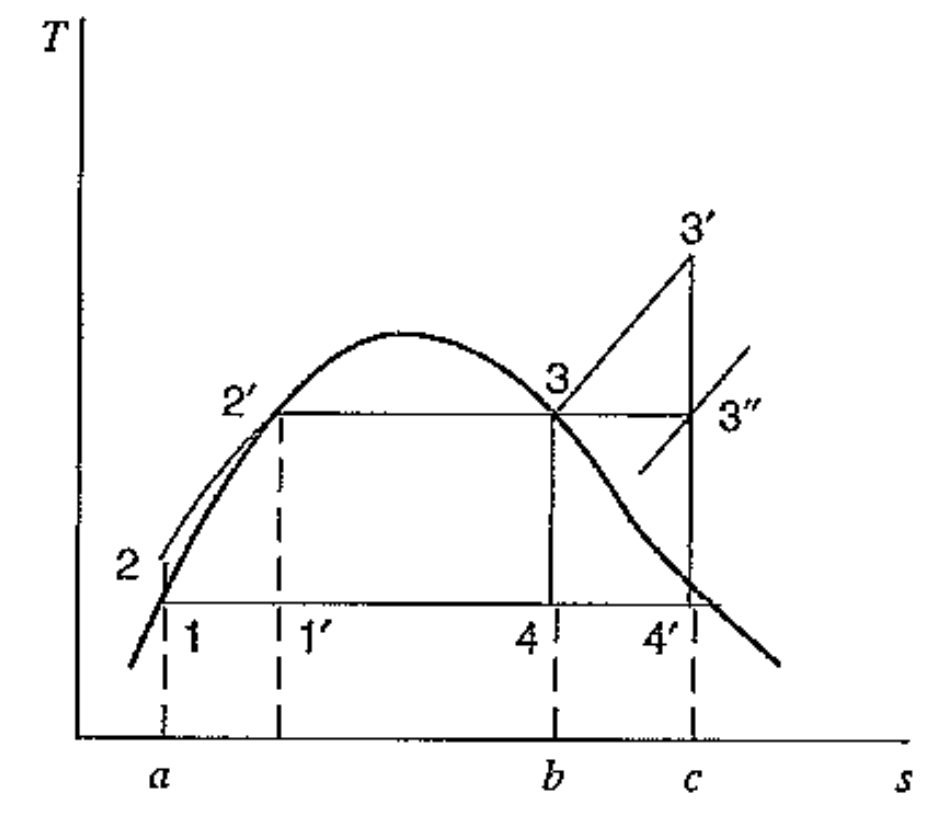
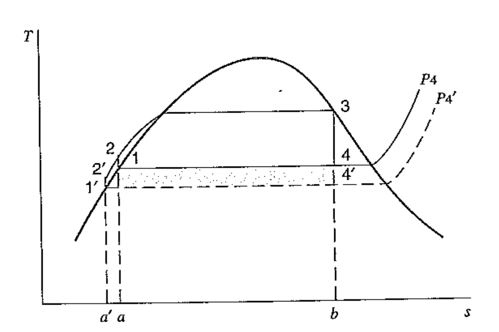
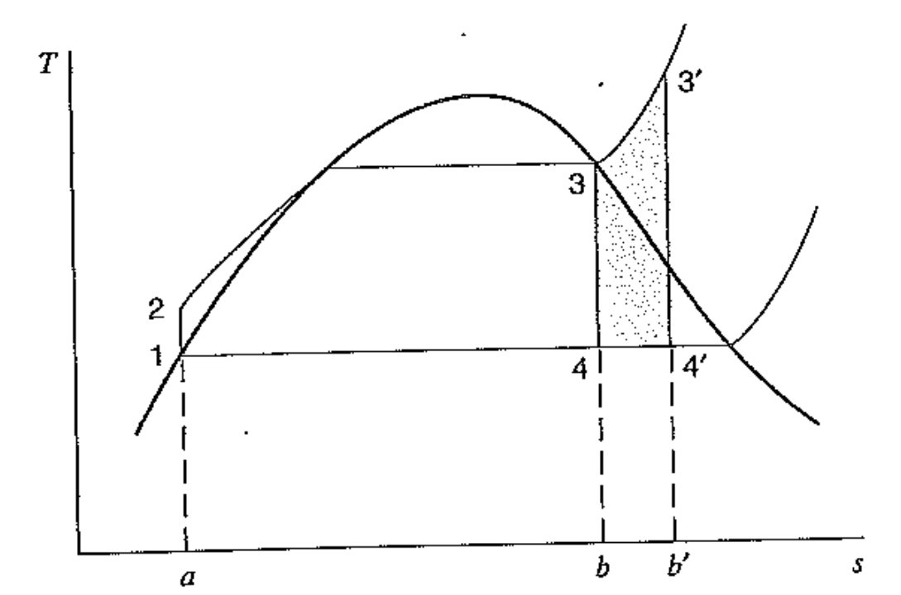
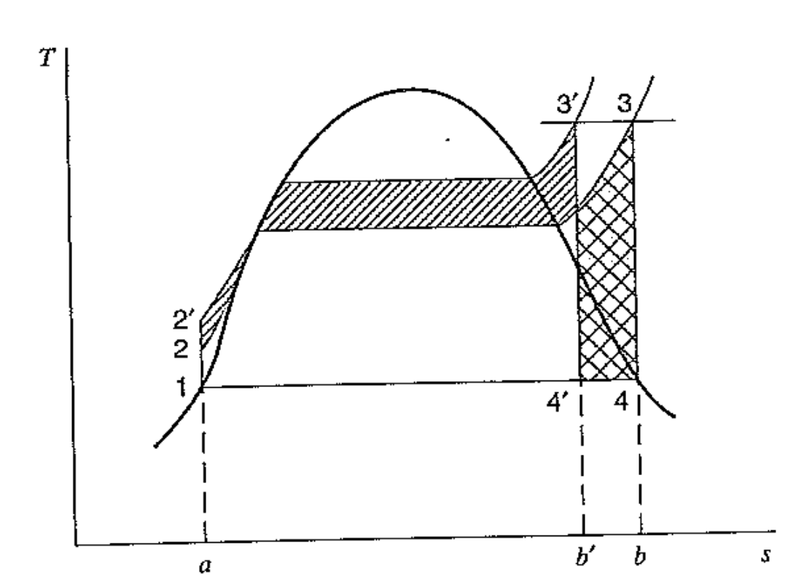
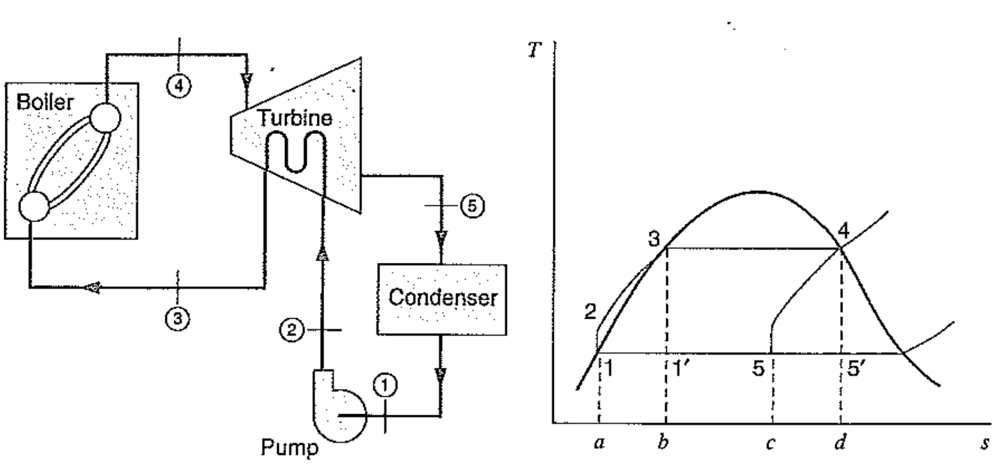

[Thermodynamics] Ch 9. Rankine cycle
이번 시간부터는,
실제 현실에서 사용되는 Cycle들과 가장 효율이 좋은
카르노 기관과의 차이점을 분석해보자.
오늘의 주인공
Rankie cycle
은
Steam power plant로
그림과 같이, Boiler, Turbine, condenser, pump로 구성되어 있다.
![[Thermodynamics] Ch 9. Rankine cycle](./images/img-001.png)
T-s그래프를 보면서 천천히 감을 잡아보자.
먼저. 1번 state - Saturated Liquid부터 시작한다.
1 -> 2 Reversible adiabatic process in pump (압력증가), W in
2 -> 3 Reversible Heat exchange in boiler (압력일정), Q in
3번 State는 Saturated Vapor
3 -> 4 Reversible adiabatic process in turbine (압력감소), W out
4 -> 1 Reversible Heat exchange in condenser (압력일정), Q out
(실제상황에서는, Boiler에서 나왔을때, 3'즉 superheated 상태로 일반적으로 나와
3' -> 4' 로 Turbine을 거친다)
1 -> 2 -> 3 -> 4 Reversible Rankie cycle과
1' -> 2' -> 3 -> 4 Carnot cycle (이전에 배운)
을 비교해보자.

Cycle에서 효율은 1-Q_L/Q_H 였고,
그 효율은 온도 비율에 의해서 결정되었다.
(CH5에서 설명)
결론적으로, Average High temperature 과 Average Low temperature 의 차이가
크면 -> 효율이 컸다.
Carnot cycle의 경우,
평균 높은 온도 = T3
평균 낮은 온도 = T4
Rankie cycle 의 경우,
T2 <평균 높은 온도 < T3
평균 낮은 온도 = T4
따라서, 카르노기관의 높낮은 온도차이가 더 크기 때문에
효율이 더 좋다는 것을 알 수 있다.
However, 그렇다면 Rankie cycle이 존재하는 이유가 뭘까? 효율이 낮은데
그 이유는 Carnot cycle은 실제 Reversible process일때만 위의 계산처럼 효율이 좋다.
실제로 자세히보면, Pump가 1' -> 2'로 갈때
Liquid + Vapor mix 가 Pump에서 Operate함을 알 수있다.
안에있는 기포들은,
pump의 효율을 당연히 떨어트리고, 작동과정에 방해가 된다.
결국, 실제상황에서는 Rankie cycle이 현실적이라는 것이다 .
이제는 Rankie cycle자체에서,
어떻게 효율을 높일 수 있을까?
기본적인 3가지 원리
효율 = 1- T_L / T_h
T_h = Average high temperature
T_L = Average Low temperature
다시 말하지만, TH>>>TL 일수록 cycle의 효율은 좋다.
위 효율의 정의대로, Th를 고정시키고, Tl을 더 낮춰보자.
그렇다면 효율은 증가할 것이다.

하지만 위 경우도 문제가 존재한다. 바로 3-4'과정 즉, Turbine과정에서
습기가 많이 생긴다는 것이다.
실제로, 10% 이상의 Quality 습기가 존재할때, blade에 부식이 생겨 효율이 떨어진다.
그렇다면, 다르게 Tl을 고정시키고, TH를 증가시키자.
-> 효율 증가.
아까 언급했다 싶이, 실제로 Superheated vapor를 사용하는 이유이다.
밑의 그림처럼 오른쪽으로 확장시키면,
Average high temperature increases,
AVerage low temperature constant
-> Efficiency increase
게다가, Turbine에서 습기가 제거되므로( 4 -> 4')
Turbine의 효율도 증가한다.

즉, 최대한 최대한 온도를 높일 수 있는 곳까지 높이는 것이 가장
이상적인 Cycle이다.
하지만, 재료적으로 높은 온도의 내성 한계가 존재하므로,
무한으로 올릴 수는 없다.
마지막으로는, 밑의 그림처럼
Max pressure을 증가 시켜준다.
밑의 그림처럼, Superhated case 1-2-3-4에서 오른쪽 빗금친 영역과 같은 넓이로
위쪽으로 확장시켜 1-2'-3'-4'을 만들어주면
안쪽 넓이가 일이기 때문에, 일은 두 과정 모두 동일하다.
하지만 들어온 Heat 의 경우,
Pressure이 큰 경우 더 작음을 확인 할 수 있다.

효율의 또 다른 정의가 바로 W/Q in 이기 때문에,
Pressure이 높을때, 효율이 좋음을 확인 할 수 있다.
하지만, 4 -> 4'과정에서 어떤 문제점이 발생할지 이제는 감이 올것이다.
바로 Turbine mositure increase이다.
터빈의 효율 하락
지금까지 효율과 직결되는 기본적인 원리에 대해서 알아보았다.
이제 실제로, 실제 효율을 증가시키는 방법을 살펴보자.
1. Reheat
![[Thermodynamics] Ch 9. Rankine cycle](./images/img-006.png)
위 그림처럼, Turbine에서 나온 기체를 중간에 Boiler에서 다시 Reheat 시키면
3 -> 4 -> 5과정을 통해 다시 열을 받게 된다.
T_s그래프를 살펴보면
Average High temperature increase
Average low temperature constant이다.
결론적으로, 효율은 증가함을 알 수 있다.
2. Regenerative
Regenerative 에서 핵심은 바로 Tubrine에서 열을 끌어다가
pump-boiler사에이 유체의 온도를 높이는 곳에 쓰는 것이다.

왼쪽 Cycle을 보면 pump-boiler사이에 Turbine이 연결되어 있음을 알 수 있다.
그리고 오른쪽의 T-s Diagram을 살펴보면,
Turbine 과정에서 열을 잃었기 때문에,
4-5 가 엔트로피 감소과정으로 바뀐 것을 볼 수 있다.
만약에, Turbine에서의 열이 Reversible heat exchange라면,
4-5 그래프 t-s graph figure = 1-2-3 t-s graph figure과
동일 할 것이다.
그렇다면, 우리가아는 카르노 기관 1'-3-4-5'
과 효율이 동일 함을 알 수 있다.(면적을 보면 정확히 동일)
However,
실제로, Turbine에서 열을 직접적으로 연결해서 사용하는 것은 불가능,
그리고 Reversible heat exchange도 당연히 불가능 하므로..
밑 사진처럼 Feed water heater 을 사용하여
Turbine에서의 열을 대신 Exchange해주는 장치를 설정한다.
![[Thermodynamics] Ch 9. Rankine cycle](./images/img-008.png)
지금까지 우리는 모든 과정들이 Reversible하다고 가정하였다.
그렇다면, 실제는 당연히 Irrversible하므로, 실제Cycle과 비교해보자.
![[Thermodynamics] Ch 9. Rankine cycle](./images/img-009.png)
먼저 1 -> 2 pump에서는 마찰로 인한 Irreversibility가 존재, s 증가
따라서, 목표하는 압력을 높이기 위해서는 더 많은 일이 필요하다.
2 -> 3, 4-> 1 과정에서 pipe 내부마찰로 인해 Pressure decrease
3 -> 4 Turbine경우에도, 사실상 압력차이로 만들어내는 일이
reversible보다 작다. 결국 마찰로 인해 엔트로피는 증가함을 알 수 있다.